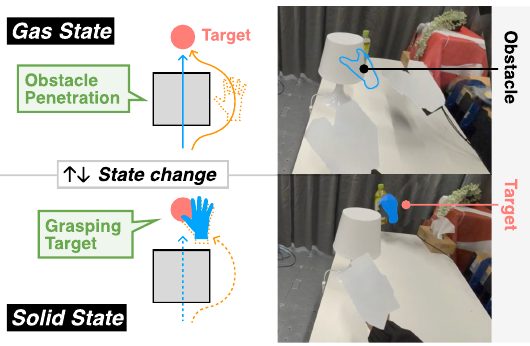

1. A State-Changing Extended Hand
The user wears a Meta Quest 3 and controls a virtual hand through natural hand motion. A Go-Go-style mapping amplifies reach so the virtual hand can travel far beyond the biological arm.
Gas state
The outlined hand moves without physical constraints, passing through obstacles or beyond the robot's workspace.
Solid state
The filled blue hand is coupled with the robot and can grasp or move real-world objects.
